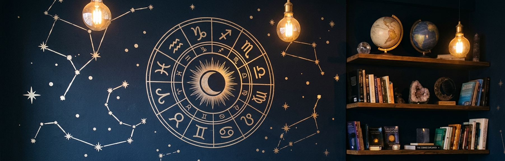
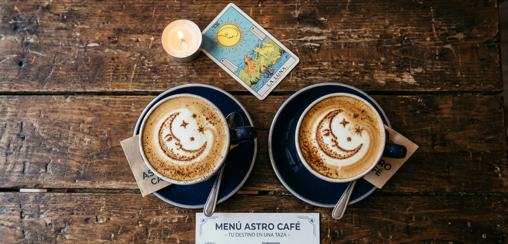

Nuestro rincón
Mesa de Astro Café con un latte y una porción de cheesecake bajo luces cálidas. El salón de Astro Café, ideal para una merienda tranquila.
Astro Café

Cada bebida y cada torta de nuestra carta está pensada para un signo: intensas para los de fuego, suaves para los de agua, clásicas para los de tierra y sorprendentes para los de aire. Elegí la tuya o dejá que tu signo elija por vos.


Mesa de Astro Café con un latte y una porción de cheesecake bajo luces cálidas. El salón de Astro Café, ideal para una merienda tranquila.